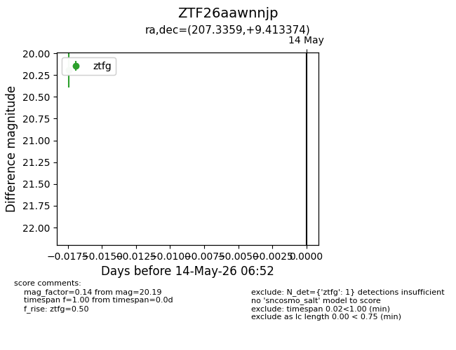
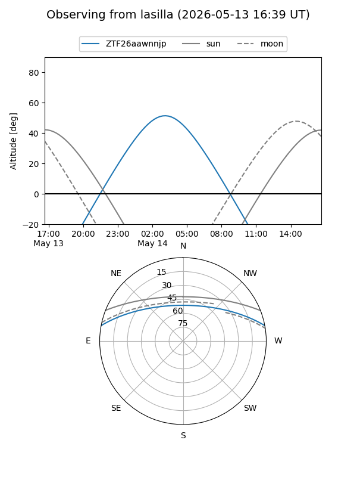
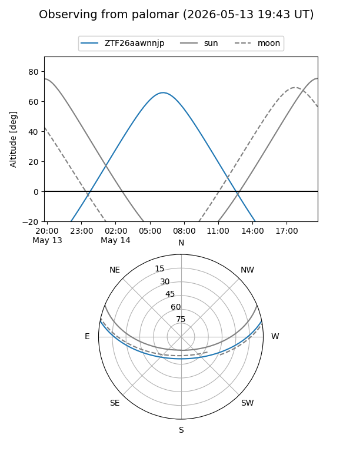
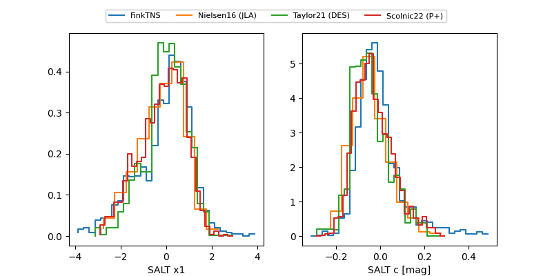

ZTF26aawnnjp
Target ZTF26aawnnjp at 2026-05-14 06:54
Aliases and brokers:
FINK: link
Lasair: link
ALeRCE: link
alt names
ZTF26aawnnjp (ztf,fink_ztf)
Coordinates:
equatorial (ra, dec) = 207.3359,+9.41337
equatorial (HMS+DMS) = 13:49:20.61,+09:24:48.15
galactic (l, b) = (343.3098,+67.62413)
Flags:
Photometry:
last ztfg=20.19
1 ztfg detections
Lightcurve

Visibility


Additional plots
